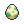
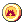
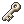

Geschichte
| Item | Wozu | Woher |
|---|---|---|
| Bring es Professor Eich. Danach bekommst du den Pokédex. | Vertania City (Geschenk oder Ereignis) | |
| Die Wachen an den Toren von Saffronia City lassen dich dafür durch. | Prismania City (Geschenk oder Ereignis) | |
| Schaltet den Aufzug im Rocket-Versteck frei. | Rocket-Versteck (Geschenk oder Ereignis) | |
| Öffnet die Türen der Silph Co.. In Johto öffnet ein zweiter die Tür im Radioturm von Dukatia City. | Silph Co. (Itemball) Dukatia City (Geschenk oder Ereignis) | |
| Öffnet die Arena der Zinnoberinsel. | Pokémon-Villa (Itemball) | |
| Bring sie dem Wärter der Safari-Zone in Fuchsania City. Er gibt dir dafür eine VM. | Safari-Zone (Kanto) (Itemball) | |
 Rätsel-Ei | Bring es von Mr. Pokémon zu Professor Lind. | Route 30 (Geschenk oder Ereignis) |
| Öffnet die Tür im Untergrund von Dukatia City. Auch die Tür von Neu Malvenfroh geht damit auf. | Dukatia City (Geschenk oder Ereignis) | |
| Heilt das kranke Pokémon im Leuchtturm von Oliviana City. | Anemonia City (Geschenk oder Ereignis) | |
| Bring ihn zu Troy in die Granithöhle. | Metarost City (Geschenk oder Ereignis) | |
| Bring sie dem Kapitän in Graphitport City. | Metaflurtunnel (Geschenk oder Ereignis) | |
| Damit kannst du die Wüste auf Route 111 betreten. | Bad Lavastadt (Geschenk oder Ereignis) | |
 Magmaemblem | Öffnet das Versteck von Team Magma am Steilpass. | Pyroberg (Geschenk oder Ereignis) |
 Werkschlüssel | Öffnet die Tür von Neu Malvenfroh. | Malvenfroh City (Geschenk oder Ereignis) |
| Der Kapitän im Hafen von Graphitport City tauscht ihn gegen ein Item. | Schiffswrack (Itemball) | |
| Öffnet den Lagerraum im Schiffswrack. | Schiffswrack (Itemball) | |
| Öffnet eine Kabine im Schiffswrack. | Schiffswrack (versteckt) | |
| Öffnet eine Kabine im Schiffswrack. | Schiffswrack (versteckt) | |
| Öffnet eine Kabine im Schiffswrack. | Schiffswrack (versteckt) | |
| Öffnet eine Kabine im Schiffswrack. | Schiffswrack (versteckt) | |
| Damit darfst du an Wettbewerben teilnehmen. | Graphitport City (Geschenk oder Ereignis) Wiesenflur (Geschenk oder Ereignis) Laubwechselfeld (Geschenk oder Ereignis) Seegrasulb City (Geschenk oder Ereignis) |